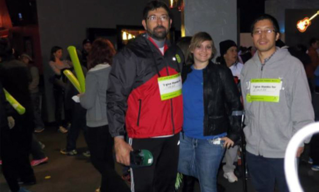

关爱患癌儿童 - St. Jude全国慈善游行成功举办
2013年11月23日，周六，离感恩节还剩5天。
全美74座城市，上万人走上街头参加了St. Jude儿童研究及治疗医院的Give Thanks. Walk.游行活动。虽然大部分的城市早已寒风侵肌，参加活动的民眾大多在清晨6点已经蓄势待发，为呼吁捐助患癌儿童而聚在一起，准备完成全程5000米的游行。

癌症，这个词也许离你很远。但当它降临到任何一个家庭的头上，将是泰山压顶。 St. Jude是全美最大的为患癌儿童提供治疗的非营利机构。该机构为患癌家庭提供免费的医疗救治，患者家属无需为治疗支付任何费用。该机构同时将其研究成果无偿公佈。 St. Jude 所有的收入来源均来自社会善款，高达81%的善款全部用於疾病治疗和研究。 为了帮助这些患癌儿童找到治愈方法并拯救他们的生命，iTalkBB美国的员工自发组织参加这一意义非凡的慈善游行，纷纷解囊为救助孩子尽自己的一份力。几乎同一时间，维吉尼亚、加利福尼亚、纽约、德克萨斯的近百名iTalkBB志愿者出现在四地活动现场，为拯救患儿散播自己的爱心。

"Together, we make a difference" – Alan Chen在活动现场略微激动地只说了这么一句话。 Alan是iTalkBB物流部门的老员工了，他给人最深的印像是常年穿的那件蓝大褂，几年来似乎不曾见他购置过新衣服。年近60的他得知一位患儿只剩最后3周生命的故事后，不禁老泪纵横，随即捐出$1,000美元。有人问他你确定要捐那么多吗，他只说"是啊，帮助小孩子嘛！"

那一天是Austin, TX有历史记录以来11月份最寒冷的一天，骤风急雨。 iTalkBB Austin 办公室Billy参加完活动，写道："我怀疑像这样的天气还会不会有人出现。但是真的有人来，而且有很多。"他见到一位被锯了腿的患癌女孩出现在活动现场，并坚持走完了全程5000米。 Billy说："到最后我真的被感动了，我参加活动之前不知道会发生什么，也不确定我自己是不是该去，但走完全程，我感到满足，受到鼓舞，并且深感责任重大。谢谢iTalkBB组织我们参加如此有意义的社区活动。" （译）
这样的故事还有很多，人们用各种方式鼓舞著对方。
iTalkBB CEO赵捷宣佈公司将匹配所有员工的捐款，这意味著iTalkBB所有员工的善款都会翻倍。活动截止时，iTalkBB善款筹集已超过$19,000美元，在洛杉矶和Mclean地区成为金额最大的捐助团队，受到St. Jude医院的表彰和特别感谢。

iTalkBB作为北美最大的华人企业之一，一直以来都在积极参与公益慈善，从捐助到07年圣地亚哥大火，08年汶川地震，资助全美中文学校，到2010年与姚明基金会联合举办慈善晚宴，捐助青海玉树地震，再到2013年雅安地震和这次的St. Jude慈善募捐，可以说iTalkBB一直用实际行动诠释"Together, we make a difference"的企业公益理念。